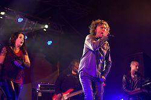
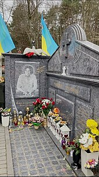

Життєпис
Народився 17 серпня 1968 року в Самборі на Львівщині. Пізніше його родина переїхала в м. Новояворівськ, де він і почав свій творчий шлях. Також Кузьма вчився в 4 школі у місті Новий Розділ, де з'явилася його мрія стати водієм сміттєвоза. Мати була вчителькою музики. Андрій закінчив музичну школу за класом фортепіано. Закінчив факультет стоматології Львівського медінституту (тепер Львівський національний медичний університет імені Данила Галицького). Йому було нецікаве навчання там, однак довчився на прохання батьків. Займався спортом, кандидат у майстри спорту з біатлону. 14 вересня 1997 року дружина Світлана народила доньку, яку назвали Марією-Барбарою — на честь польської акторки Барбари Брильської, кумира дитинства Андрія Кузьменка (за його словами, дружина також дуже подібна на Барбару Брильську). Розмовляв українською мовою, також знав англійську, польську та російську мови.
2000—2010
Історія життя Андрія надалі була тісно пов'язана з гуртом «Скрябін». У 2000 році був
ведучим власного
хіт-параду «Гаряча сімка», який проіснував до 2002 року.
У 2000 році Кузьма посварився з Ростиславом Домішевським (Рой, Ростик). Промайнула чутка про розпад
«Скрябіна». Після того Андрій почав набирати обертів у популярності, а Рой почав займатися переважно
адміністративними справами гурту. Стосунки між ними охололи.
У 2002 році гурт покинув Ростик. Через рік до нього приєднався Шура (Сергій Гера).
З 2003 року Кузьменко протягом усіх десяти сезонів працював разом зі співачкою Наталею Могилевською
ведучим музичного телепроєкту «Шанс» на телеканалі «Інтер», а згодом і програми «Шиканемо». З того
часу
Андрій бере всі важелі керування проєктом «Скрябін» на себе, починає творити зовсім іншу музику, ніж
досі. Очевидними стали зміни в його поглядах та ідеях — це стає помітним у його словах в інтерв'ю.
Наприкінці 2003 року, Кузьма опинився в числі музикантів, що мали брати участь в агітаційних концертах
на
підтримку провладного кандидата Віктора Януковича: за контрактом з «Інтером» Кузьменко був
зобов'язаний
брати участь у всіх акціях телеканалу.
На початку 2004 року, розбіжність у політичних поглядах між колишніми учасниками
Скрябіна стала
причиною
гострої критики Кузьми. Так, під час Помаранчевої революції він мав багато звинувачень, зокрема від
Ростика та Шури, який на 5 каналі публічно вибачився. за свою участь у підтримці Януковича в першому
турі, й змінивши власну думку закликав Кузьму зробити так само.
За словами Кузьми, провладні сили пригрозили йому тоді, що він матиме проблеми після виборів, якщо не
виступатиме за Януковича у агітаційних концертах на його підтримку. Водночас Віктор Ющенко для нього
вже тоді був «абсолютно непозитивним героєм».
Музикант назвав цей інцидент досвідом і травмою, після якої його вже «ніхто в житті не перекупить», і
що
він отримав тоді багато ворогів — «процентів 50 країни».
У 2006 році Кузьменко проявив себе як письменник після видання власної книги-автобіографії «Я, Побєда
і
Берлін», яка кілька разів перевидавалась.
У 2009 році створив гурт «Пающіє труси», допоміг здобути популярність гурту «DZIDZIO». Того року був
членом журі літературної премії «Книга року BBC»
2010—2015
У червні 2013 року у Вінниці разом з Павлом Табаковим та гуртом «ТіК» у супроводі ЦВММ ПС ЗС України взяв участь у благодійному концерті до міжнародного дня захисту дітей «Школа доступна для всіх». Наприкінці січня 2014 року записав пісню, присвячену подіям Євромайдану, зауваживши, що він підтримує людей на Майдані, але не опозицію. Протягом 2014 року допомагав військовим та пораненим у зоні АТО на сході України[15]. У жовтні 2014-го запустив власне інтернет-радіо під назвою «S.R.A.K.A.—Своє Радіо Андрія КузьменкА», у якому, за його словами, грала музика, яку він слухав у машині. Журі українського музичного шоу «Співай як зірка» 2015 року. Одному з учасників, який хотів витратити виграш на ноутбук, подарував свій власний. Андрій пішов з життя через кілька тижнів після зйомки у фіналі проєкту. Напередодні смерті дав досить скандальні інтерв'ю з критикою влади
Загибель

За офіційною версією МВС України, 2 лютого 2015 року, близько 08:20 за твердженням концертного техніка гурту «Скрябін» Юрія Лисяка це сталося близько 07:00, за даними слідства, про які повідомила UkrMedia, виклик на підстанції швидкої медичної допомоги був зафіксований о 06:54 загинув в автокатастрофі біля села Лозуватка Криворізького району Дніпропетровської області. Того ж дня, пресслужба департаменту Державної автомобільної інспекції МВС України повідомила, що, за попередніми даними, на 86 км автошляху Кривий Ріг — Кропивницький(48°03′44″ пн. ш. 33°13′25″ сх. д.) відбулося зіткнення позашляховика Toyota Sequoia, за кермом якого перебував співак, і молоковоза ГАЗ-53. Від отриманих травм Андрій Кузьменко загинув через пів години. Андрій Кузьменко повертався з Кривого Рогу, де напередодні його гурт дав концерт. У фатальній ДТП постраждали також дві жінки — пасажирки автівки Кузьменка та молоковоза відповідно; їх доправили до криворізьких лікарень № 2 та № 9. Водій молоковоза протягом усього часу слідчих дій перебував на місці ДТП
Прощання
Андрія відспівували 5 лютого 2015 року в Церкві Преображення Господа Нашого Ісуса Христа Львова. Поховали музиканта в родинному склепі на кладовищі в Брюховичах. 20 травня в Київському палаці спорту в Києві і 21 червня на Арені «Львів» у Львові було проведено концерти пам'яті Скрябіна. Разом з музикантами гурту «Скрябін» виконували пісні Кузьменка Святослав Вакарчук, Руслана Лижичко, Сашко Положинський, «ТІК», «Авіатор», Арсен Мірзоян, Тарас Тополя, Марія Бурмака, Ірина Білик, Дзідзьо, Дмитро Шуров та інші. Режисером-постановником концерту-триб'юту пам'яті Кузьми був Михайло Крупієвський.
Сім'я та особисте життя
Був одружений з 1994 року зі Світланою Іванівною Бабійчук (нар. 26 березня 1968 року в Курську), дочкою художника Івана Бабійчука (1944 — 2015)[41], художницею, майстром розпису по дереву. Вона навчалася з Андрієм у паралельних класах, у 1990 році закінчила Курський педагогічний інститут. У 2006 році Світлана мала магазини на Андріївському узвозі. Розписувала шовк і батик, працювала на замовлення, заснувала благодійний «Фонд імені Кузьми Скрябіна», допомагає дитячим будинкам, лікарням, займається волонтерською діяльністю й підтримує українських військових, як це робив Андрій. Донька — Марія-Барбара Андріївна Кузьменко (Бася) (нар. 14 вересня 1997), названа на честь акторки Барбари Брильської, кумира дитинства Андрія, з якою Андрій був особисто знайомий. Донька навчалася в Медичному університеті імені Богомольця. Отримала диплом дерматолога. Мати — Ольга Михайлівна Кузьменко, викладач гри на фортепіано в музичній школі, письменниця, померла 23 вересня 2023 року у віці 76 років
Громадська діяльність
За словами Андрія, у 2004 році він вимушено мав виступати з концертами на підтримку кандидата в президенти Віктора Януковича[45]. Згодом Кузьменко зайняв активну політичну позицію, яку часто висловлював в інтерв'ю. Він постійно допомагав бійцям АТО фінансово, також був відомий тим, що іноді приходив до лікарні, де лікувалися бійці. Сам Андрій пояснював: після поранення боєць стає нецікавий державі, від нього всі відвертаються, тож украй важливо спілкуватися з ветеранами. Андрій Кузьменко постійно піддавав критиці діяльність українських політиків. Андрій зняв кілька відео зі зверненням до депутатів ВРУ. У них він їхав дорогами України, коментуючи те, що бачить за вікном. Зокрема, жахливу якість доріг, ями, затопленість, брак ремонту тощо